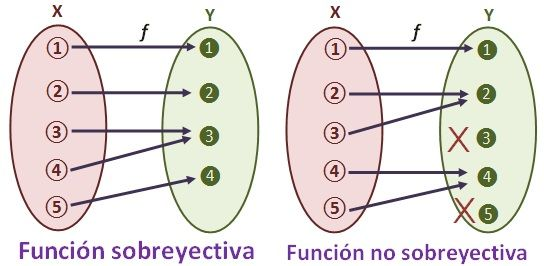
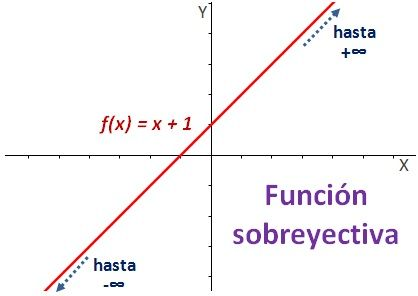

FUNCIÓN SOBREYECTIVA
Una función es sobreyectiva, también llamada suprayectiva o exhaustiva, cuando el codominio y el recorrido coinciden. Formalmente:
∀𝑦∈𝐶𝑜𝑑𝑓 ∃𝑥∈𝐷𝑜𝑚𝑓 / 𝑓𝑥=𝑦
Es decir, para cada elemento del conjunto de llegada le corresponde por lo menos un elemento del conjunto de partida.

Sobreyectiva vs no sobreyectiva
A la izquierda, una función sobreyectiva. Como tal, el codominio y el recorrido coinciden. O, dicho de manera más gráfica, todos los elementos del codominio reciben flechas. A la derecha, una función no sobreyectiva. En este caso hay elementos del codominio que no están incluidos en el recorrido. Observa, además, que ambas funciones son no inyectivas, pues ambas cuentan con elementos en el recorrido que reciben más de una flecha.
Por tanto, si te piden una demostración de que una función real es sobreyectiva, puedes hallar la imagen de dicha función. Si la imagen es el conjunto de los reales, la función es sobreyectiva. En caso contrario, no.
En la gráfica Real
